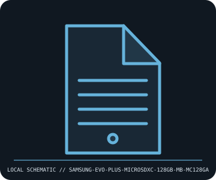

[ REMOVABLE MEDIA // MODEL-SPECIFIC RECORD ]
Samsung EVO Plus microSDXC 128 GB (MB-MC128GA)
Samsung EVO Plus UHS-I microSDXC card, MB-MC128GA generation. This catalog entry distinguishes the removable medium from its drive/reader and calls out model-specific fit and format caveats.

IDENTIFICATION: Transcribe the entire model/part number, capacity, generation and revision from the label or packaging. Confirm the exact host-device manual before inserting or writing.
Format, capacity and compatibility
| Product / part ID | Samsung EVO Plus microSDXC 128 GB (MB-MC128GA) |
|---|---|
| Generation / format | Samsung EVO Plus UHS-I microSDXC card, MB-MC128GA generation |
| Capacity and medium | Samsung MB-MC128GA, 128 GB microSDXC card, UHS-I / Class 10 / U3 product generation; advertised sequential speeds vary by retail revision and packaging. 128 GB is SDXC, not microSDHC. |
| Compatibility | Requires a microSDXC-capable host/reader and SDXC-compatible filesystem support (normally exFAT). It may operate at reduced bus speed in compatible UHS-I hosts; old microSDHC-only devices generally top out at 32 GB and are not presumed compatible. |
| Version and model caveat | Samsung has reused EVO Plus branding across materially different model revisions, speed ratings, and packaging. MB-MC128GA is the identifier for this specified generation; match card printing and check the device manufacturer capacity limit. |
Handling and preservation
Keep contacts clean and dry, use a protective case, and do not remove during writes. Format only after backup and with the target device’s preferred formatter. Check actual capacity and checksums; flash media is transport/storage, not a durable single-copy archive.
- Preserve original packaging, label, acquisition notes and any write-protect state; photograph the media before use.
- Make at least two independent copies of valuable data, verify checksums, and periodically test a restore. A removable cartridge or card alone is not an archival strategy.
Model and version notes
Samsung has reused EVO Plus branding across materially different model revisions, speed ratings, and packaging. MB-MC128GA is the identifier for this specified generation; match card printing and check the device manufacturer capacity limit.
Standards and product-family sources establish the generation; exact model manuals, labels, regional revisions, firmware, interface and host support determine actual interchangeability.
Sources and standards
- Samsung — MB-MC128GA product specificationsManufacturer product family page; select exact MB-MC128GA revision for its speed labels and instructions.
- SD Association — SD standards overviewPrimary standards source for SDXC capacity range, UHS bus modes, and speed-class symbols.
Manufacturer and standards references are preferred; archival manuals or museum records are identified when products are discontinued. Capacity and compatibility claims are scoped to the specific SKU and generation named above.